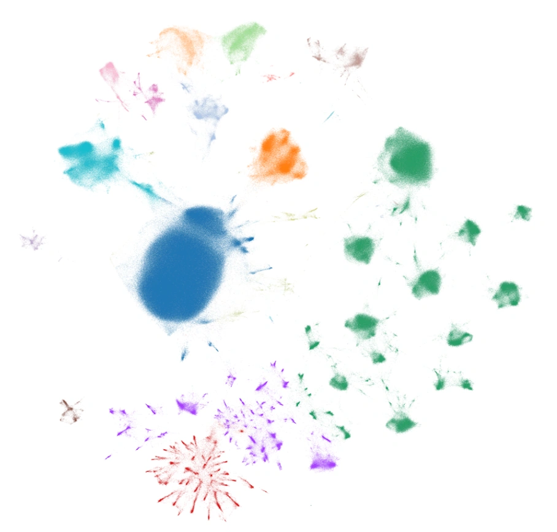
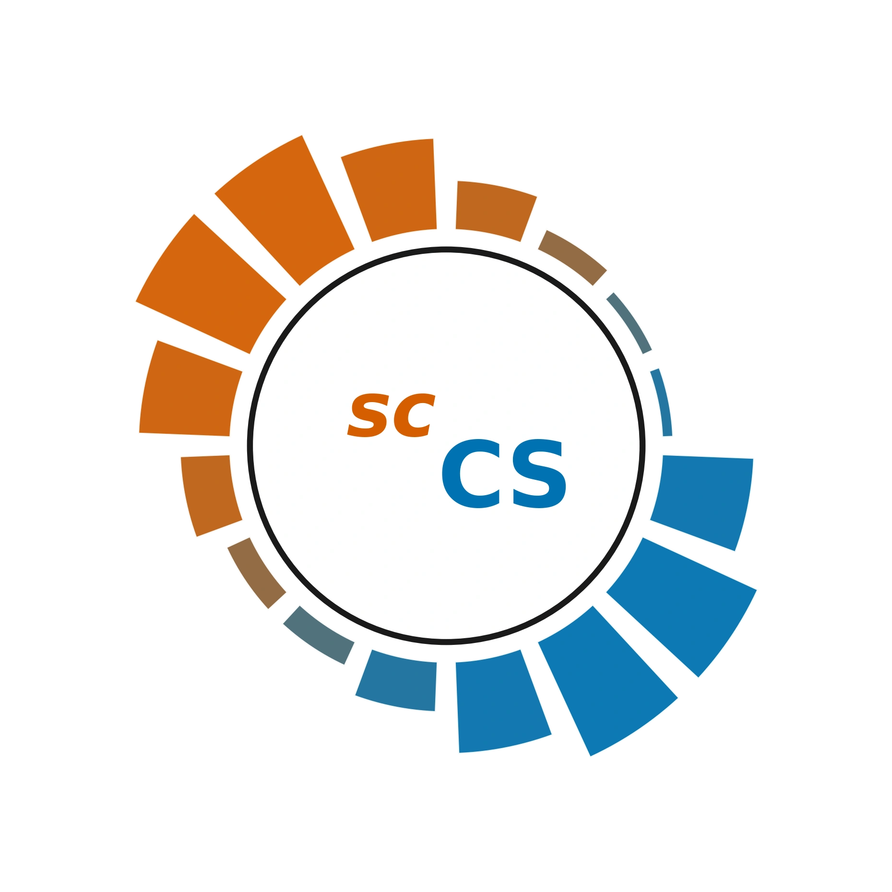
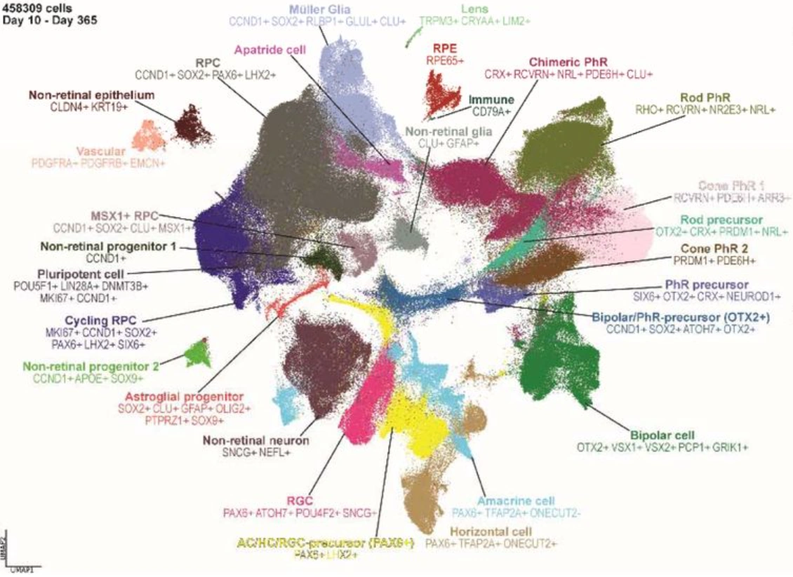
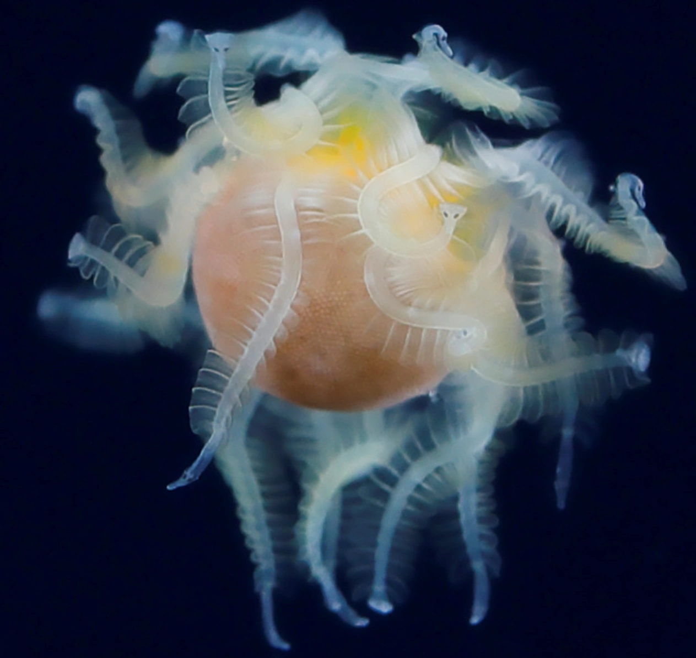
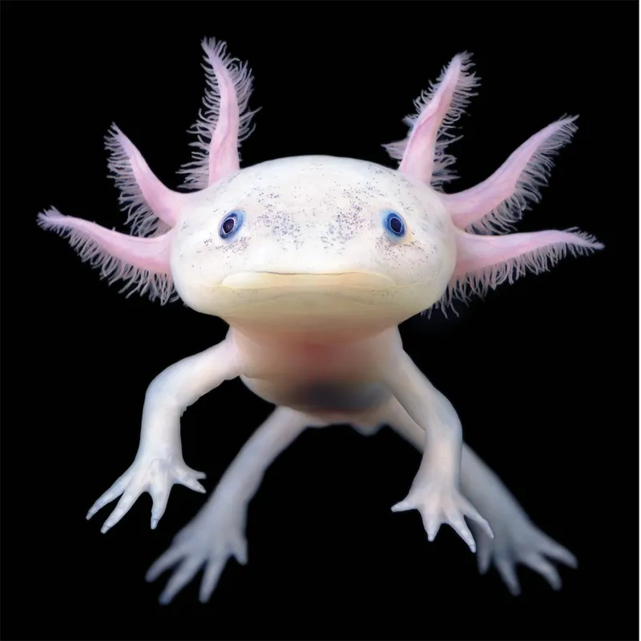

mouse retina+optic nerve×conditions

I use computational biology to discover therapeutic targets for vision restoration, combining retinal and optic-nerve atlas assembly, machine-learning-enabled integration, quantitative cell-state modeling, multi-omics, and scientific software development.
North star

A unified reference to resolve retinal and optic-nerve cell types and states across development, homeostasis, injury, and neurodegeneration.
Eye1k currently integrates 13 single-cell atlases and is being developed with a consortium-based annotation strategy. The long-term goal is to use cross-condition maps to identify molecular programs and candidate therapeutic targets relevant to vision restoration.
In-house pipelines standardize public and collaborative datasets, scale analysis to millions of cells, use GPU acceleration, and apply machine-learning integration where it adds value.
Individual studies become one connected reference rather than isolated datasets — spanning retina and optic nerve, ages, perturbations, disease models, and experimental conditions.
I established and coordinate a consortium of wet-lab and domain experts who work with my bioinformatics team to resolve cell classes and subtypes consistently across the collection.
The unified atlas enables analyses of aging, optic-nerve-crush responses, neurodegeneration, model-to-model differences, cross-species conservation, and recurrent molecular programs relevant to vision restoration.
In parallel

single-cell Commitment Scores
A computational framework for quantitative assessment of cell-fate commitment from single-cell transcriptomic data, designed to describe commitment as a continuous property rather than only a discrete cell label.
Preprint ↗
Human Retinal Organoid Cell Atlas
Ongoing development of a high-resolution single-cell reference for human retinal organoids, with cross-system comparison to in vivo human retinal development and a focus on transcriptional states that emerge or diverge in vitro.
Preprint ↗Systems-level single-cell dissection
A systems-level single-cell dissection of a preclinical murine model of NF1 optic glioma, focused on tumor-associated cellular states, microenvironmental changes, and candidate vulnerabilities.
Integrated single-cell multi-omics
Contributing to an integrated single-cell multi-omics reference of the human optic nerve to resolve cell types, molecular programs, and tissue organization across complementary modalities.
Trajectory
University of Pittsburgh
Leading Eye1k, developing scCS, coordinating a five-member bioinformatics team, and supporting computational work across internal and collaborative studies.
Schepens Eye Research Institute of Mass Eye and Ear · Harvard Medical School
Built and analyzed large-scale single-cell atlases of retinal development across in vivo and in vitro systems, with emphasis on retinal ganglion cell specification and maturation. Developed workflows for integration, trajectories, and cross-system comparison across datasets totaling more than three million cells.
Laboratory of Bone and Cartilage Physiology · Karolinska Institutet
Studied the cartilage stem-cell niche in development and regeneration while developing expertise in light-sheet microscopy, single-cell transcriptomics, RNA velocity, and deep-learning models for microscopy.
Center for Brain Research · Medical University of Vienna
Worked with spatial and single-cell approaches around Schwann-cell progenitor derivatives and adrenal development, including slide-seq2 / merFISH concepts, RNA Scope, advanced microscopy, visualization, and Seurat.
Laboratory of Skeletal Tissues Regeneration · Sechenov University
Worked on mineralized-tissue analysis during regeneration and advanced microscopy, including Lambda, Airyscan, IHC modifications, and whole-mount IHC.
Laboratory of Developmental Biology and Regenerative Medicine · Karolinska Institutet
Worked on neural-crest development and neuroblastoma biology while developing hands-on experience in confocal microscopy, cryotomy, and immunohistochemistry.
Institute of Experimental Oncology and Biomedical Technologies · Nizhny Novgorod
Early research spanning tumor metabolism and chemoresistance, neural-crest derivatives, tumor stem cells, transplantation biology, and the regenerative potential and metabolism of the growth-plate stem-cell niche.
Teaching
Computational biology training across career stages
I enjoy mentoring people at very different stages, from high-school students to postdocs, especially around single-cell analysis, computational thinking, and research design.
From formal coursework to practical workshop teaching
Side quests

Polymorphic parasitic larvae that cooperate as a swimming colony
A collaboration outside my main retinal work: two morphologically and functionally distinct cercarial forms cooperate to build a swimming aggregate proposed to aid host infection — a striking example of division of labor in a parasite.
Current Biology ↗
Body-wide and local responses to amputation
A large collaborative regeneration project showing that adrenergic signaling coordinates systemic stem-cell activation with local limb-regeneration responses after amputation in axolotl.
Cell ↗Methods
My work spans the full path from raw sequencing data to atlas-scale analysis, quantitative modeling, and experimental validation, with an emphasis on scalable omics workflows.
Next step
I am happy to discuss PhD opportunities, research collaborations, atlas integration, single-cell methods, and computational approaches to vision restoration.